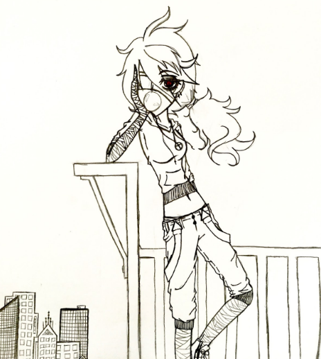
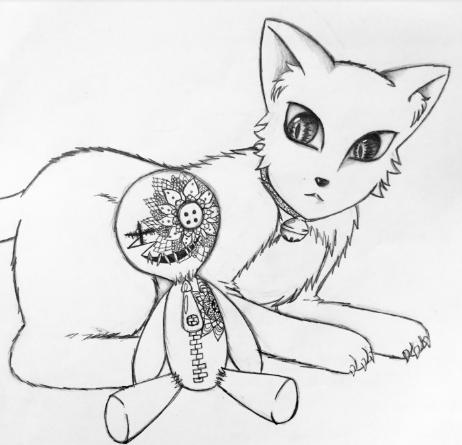
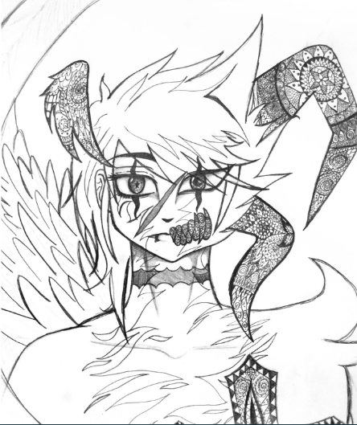
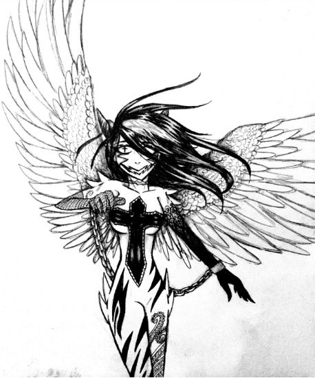

Drawing is one of my favorite hobbies. I like to practice drawing in my sketchbook all the time so I can get better and better. People say that drawing is really hard, but if you actually try then it’s super easy. I’m not a huge expert or pro at drawing but I know I can draw pretty well, especially for a girl who has not been in an art class before.
To be honest, I don’t really know why or how I can draw so well. The first time I drew something, which was sometime in kindergarten, I was the worst artist I knew. I hated art because I knew I was terrible at it. Then, my parents showed me some really cool japanese cartoons called anime. I thought anime was the coolest thing I have ever seen before in my life and that I wanted to draw anime, too.
The first drawing I made was a drawing of a little girl. It only took me about 30 minutes to draw her and it was actually pretty easy. I showed all of my friends and family the first drawing I made and they all said it was the best thing I have ever made. So, I decided to keep drawing anime so I could keep getting better at it and then I actually started to enjoy drawing.
Now, I draw all the time in my sketchbooks and I'm still trying to draw different things like buildings and furniture, so people and animals won't be the only things I'm good at drawing. I also want to learn how to color things so my drawings won't just be plain white and black. When I graduate, I want to be a creative director for games so I can bring my drawings to life in a video game. I make comic books and stories of the games I want to create. I love drawing so much because it’s fun and I like creating my own stories.
Here are some pictures of the drawings I have made.
   
By Melissa V.